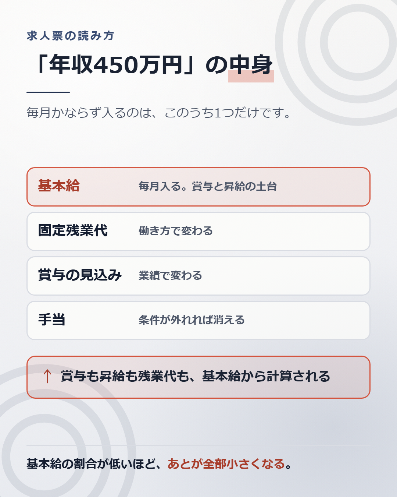

求人票に書いてある年収は、あなたがもらう金額ではありません。
嘘が書いてあるわけではありません。書き手と読み手で、言葉の意味が違うだけです。 会社は「その条件で働いた人が、うまくいけば届く額」を書いています。読む人は「入ったらもらえる額」だと思って読みます。
ずれる場所は、いつも同じ4か所です。

求人票の年収は、たいてい次の4つの合計です。
4つのうち、毎月かならず入ってくるのは、基本給と手当だけです。固定残業代は働き方で変わります。賞与は業績で変わります。
同じ450万円でも、中身の比率が会社ごとに違います。比率が違うと、同じ450万円でも、翌年からの増え方が変わります。
「月給28万円」と書いてある下に、小さく「みなし残業45時間を含む」と書いてあることがあります。
45時間ぶんが給料に入っているという意味です。45時間までは、残業しても増えません。 実際に働いた時間で割ると、時給は書いてある数字より下がります。
固定残業代を使う場合、会社は3つを求人票に書くことになっています。固定残業代を除いた基本給。固定残業代の金額と、相当する時間数。超えた分は別に払うという一文。 3つのうち1つでも見つからなければ、面接で聞いてください。
根拠は、職業安定法5条の3（労働条件等の明示）と、この条文に基づく厚生労働省の指針です。2017年の職業安定法の改正にあわせて指針が改められ、2018年1月1日から求められています。
つまり、3つが書いていない求人票は、いまの決まりに沿っていません。
下までスクロールすると、たいてい小さく書いてあります。
ここが、いちばん見落とされる場所です。
基本給は、その月の金額ではありません。あとから効いてくる計算の土台です。
賞与は、多くの会社で「基本給 × 月数 × 評価係数」で決まります。基本給が低ければ、月数が同じでも賞与は小さくなります。
昇給も同じです。昇給率が3%だとすると、基本給25万円の人は7,500円増えます。基本給20万円の人は6,000円です。差は毎年ひらきます。
退職金の計算に基本給を使う会社もあります。
だから、同じ月給でも、基本給の割合が低い会社のほうが、将来は小さくなります。 手当で埋めてある求人票は、いま同じでも、3年後に差がつきます。
「賞与年2回（4か月分）」と書いてある求人があります。
すぐ下に「業績による」とだけ添えてあることがあります。4か月は約束ではありません。去年そうだった、という意味です。
聞き方は決まっています。「直近3年の支給月数を教えてください」 です。3年分そろえば、幅が見えます。去年だけが良かったのか、毎年出ているのかが分かります。
答えられない会社もあります。答えられないこと自体が、情報です。
幅のある書き方をしている求人があります。
上限は、たいていいま在籍している上の等級の人の金額です。入ったばかりの人が届く数字ではありません。見るべきは上限ではなく、下限のほうです。
記事1で書いたとおり、給料は等級で段が決まっています。求人のレンジは、その会社の等級表を薄く写したものです。下限が、いちばん下の段の金額に近くなります。
求人票の休日欄に、よく似た2つの言葉が並びます。
「完全週休二日制」は、毎週2日休みがあるという意味で使われます。 「週休二日制」は、月に1回でも週2日休みの週があればよい、という意味で使われます。
1文字違いで、中身が変わります。
ただし、2つは法律の言葉ではありません。 求人の世界で広く使われている慣行上の呼び分けです。法律が決めているのは休日の最低ラインだけで、労働基準法35条が「毎週1日、または4週間で4日」と定めています。
慣行なので、会社によって使い方がずれることがあります。言葉を信じるより、数字を見たほうが確実です。
確実なのは、年間休日数のほうです。数字で書いてあるので、解釈の余地がありません。年間休日の平均は、厚生労働省が毎年「就労条件総合調査」で公表しています。自分が見ている求人が、平均より上か下かを比べられます。
年間休日が125日の会社と、105日の会社があります。差は20日です。ひと月ぶんの出勤日に近い差です。
年収が同じで年間休日が20日違えば、1日あたりの取り分は約8%変わります。 450万円の求人が、実質では410万円台の働き方になる、ということです。
年間休日は、残業代の単価にも効いてきます。休日が少ないほど、残業代の計算に使う分母が大きくなるためです。計算の仕方は記事8にまとめています。
給料の欄だけを比べていると、ここは見えません。
気になっている求人を1つ開いてください。
書いてある年収を、4つに分けてみます。 基本給。固定残業代。賞与の見込み。手当。
分けられない項目があれば、そこが聞くべき場所です。分けてみると、毎月かならず入ってくる金額が見えます。その金額が、生活の土台になる数字です。
450万円という数字より、ずっと役に立ちます。
求人票を正しく読めるようになると、悪い求人を避けられるようになります。
避けられるようになっても、自分がどの帯の求人に届くのかは分かりません。 届く帯は、会社が決めるのではなく、市場が決めます。市場の値段は、外から値段がつかないと分かりません。
調べ方は、別の記事にまとめています。